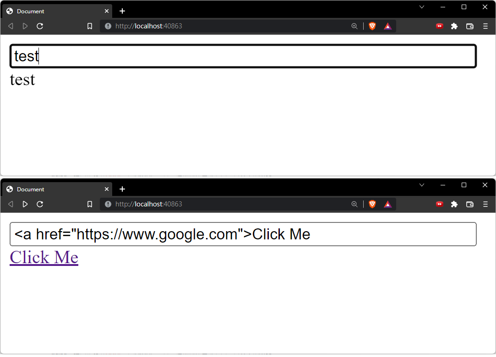

網頁的基礎安全
在 WEB 中，也會有許多常見的攻擊手法，這些攻擊手法會被在OWASP的網站都會有紀錄
OWASP：Open Web Application Security Project


雖然大部分都是後端處理時的漏洞，但是這裡簡單說明一下幾種常見的手法：
Inject
透過特殊的資料，導致語意的變化，就是Injection。XSS也合併到該類別之下
其中最有名的例子就是 SQL Injection，
比方說伺服器的登入系統，實作如下：
function login(username, password) {
const cmd = `SELECT COUNT(*) FROM db.user WHERE user = ${username} AND password = ${password}`;
const result = await database.exec(cmd);
return result >= 1;
}
這裡用 COUNT(*) 來搜尋的結果，如果包含的資料多等於一筆，代表該用戶存在
那假設提交了一個特殊的帳號名稱，如：
username="true;\nDELETE FROM user; #"
password="password"
那的SQL 指令會變成：
SELECT COUNT(*) FROM db.user WHERE user = true;
DELETE FROM user; #AND password = 'password'
這將會導致資料庫的內容被刪除
而 XSS 的意思是 Cross-Site Scripting，比方說有個元件如下：
<input id="textField">
<div id="output"></div>
<script>
const output = document.querySelector("#output");
const textField = document.querySelector("#textField");
textField.addEventListener("input", e => {
output.innerHTML = e.target.value;
})
</script>
倘若輸入 <a href="https://www.google.com/">Click Me

CSRF
CSRF 則是 Cross-site request forgery
比方說某個API可以轉帳：
https://bank.example.com/withdraw?account=AccoutName&amount=1000&for=PayeeName
那能在網頁上加入：
<img src="https://bank.example.com/withdraw?account=Alice&amount=1000&for=Badman" />
如果 Alice 剛剛結束銀行的操作，且登入資訊還保留在 Cookie 中，那麼當 Alice 存取該網站時， Alice 就會轉帳給 Badman
常見的手法，可能會在輸入表單加入額外的
<input type="hidden" name="_token" value="{Server提供的特殊Token}">
不過這些漏洞算是常見的小兒科，接下來專注在程式碼上的處理，並說明一下瀏覽器安全策略
根據筆者開發的經驗，一定要避免：
- 使用
eval函式(大忌) - 盡量不要直接操作
innerHTML屬性
CSP (Content-Security-Policy)
Content-Security-Policy 是瀏覽器提供的安全層，用於檢測與削弱特定類型的攻擊
比方說 XSS 和 Injection，因為這兩種是很主要的攻擊手段
通常由伺服器端回傳 Content-Security-Policy 表頭，或是透過以下方式設定：
<meta http-equiv="Content-Security-Policy" content="<policy>">
CSP 的主要目標是減少和報告 XSS 攻擊，XSS 攻擊利用了瀏覽器對於從服務器所獲取的內容的信任
惡意腳本在受害者的瀏覽器中得以運行，因為瀏覽器信任其內容來源，即使有的時候這些腳本並非來自於它本該來的地方
CSP 通過指定瀏覽器認可的有效來源——使服務器管理者有能力減少或消除 XSS 攻擊所依賴的載體
一個 CSP 兼容的瀏覽器將會僅執行從白名單域獲取到的腳本文件，忽略所有的其他腳本 (包括內聯腳本和 HTML 的事件處理屬性)
作為一種終極防護形式，始終不允許執行JavaScript的站點可以選擇全面禁止JavaScript執行
而 Policy 可以指定的範圍很廣，如圖片來源、字體來源、腳本來源 ... 等
幾乎只要是瀏覽器可以載入的資源，都可以設定，常用的作法如：
# 僅允許同源站點(不包含子網域)
Content-Security-Policy: default-src 'self'
# 僅允許同源站點(不包含子網域) 與 trusted.com 的子網域
Content-Security-Policy: default-src 'self' *.trusted.com
# 允許任何來源的圖片，但是影音來源與腳本來源受到限制
Content-Security-Policy: default-src 'self'; img-src *;
media-src media1.com media2.com;
script-src userscripts.example.com
# 只允許 HTTPS 協定以及信任 onlinebanking.jumbobank.com 來源的資料
Content-Security-Policy: default-src https://onlinebanking.jumbobank.com
更多內容請參考 MDN: CSP
CORS (Cross-Origin Resource Sharing)
當使用者代理請求一個不是目前文件來源——例如來自於不同網域（domain）、通訊協定（protocol）或通訊埠（port）的資源時，會建立一個跨來源 HTTP 請求（cross-origin HTTP request）
基於安全性考量，程式碼所發出的跨來源 HTTP 請求會受到限制
例如，XMLHttpRequest 及 Fetch 都遵守同源政策（same-origin policy）
這代表網路應用程式所使用的 API 除非使用 CORS 標頭，否則只能請求與應用程式相同網域的 HTTP 資源

當從站點A發出請求到站點B時，若站點B的回應不包含 CORS 表單，那麼站點A的請求便會擋下該回應
比方說有個請求與回應的內容如下：
GET /resources/access-control-with-credentials/ HTTP/1.1
Host: bar.other
User-Agent: Mozilla/5.0 (Macintosh; U; Intel Mac OS X 10.5; en-US; rv:1.9.1b3pre) Gecko/20081130 Minefield/3.1b3pre
Accept: text/html,application/xhtml+xml,application/xml;q=0.9,*/*;q=0.8
Accept-Language: en-us,en;q=0.5
Accept-Encoding: gzip,deflate
Accept-Charset: ISO-8859-1,utf-8;q=0.7,*;q=0.7
Connection: keep-alive
Referer: http://foo.example/examples/credential.html
Origin: http://foo.example
Cookie: pageAccess=2
HTTP/1.1 200 OK
Date: Mon, 01 Dec 2008 01:34:52 GMT
Server: Apache/2.0.61 (Unix) PHP/4.4.7 mod_ssl/2.0.61 OpenSSL/0.9.7e mod_fastcgi/2.4.2 DAV/2 SVN/1.4.2
X-Powered-By: PHP/5.2.6
Access-Control-Allow-Origin: http://foo.example ❗
Access-Control-Allow-Credentials: true
Cache-Control: no-cache
Pragma: no-cache
Set-Cookie: pageAccess=3; expires=Wed, 31-Dec-2008 01:34:53 GMT
Vary: Accept-Encoding, Origin
Content-Encoding: gzip
Content-Length: 106
Keep-Alive: timeout=2, max=100
Connection: Keep-Alive
Content-Type: text/plain
[payload]
更多的內容請參考 MDN: CORS
章節回顧
本章節解釋了常見的網路攻擊手法，以及 OWASP 組織
並提出一些設計上應該避免的作法，最後帶出 CSP 與 CORS 的概念
- 常見的攻擊手法
- CSP 與 CORS 機制